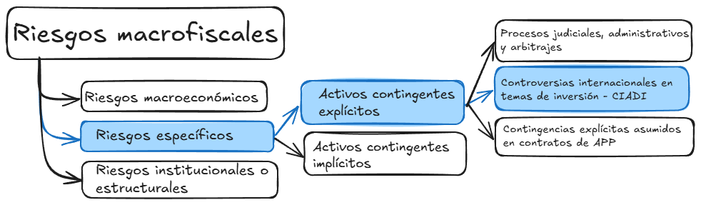

Casos del Perú en el CIADI
Abraham Calderon

Instalación de Selenium
!pip install -q selenium
!apt-get -qq update
!apt-get install -qq -y chromium-browser
!apt install -qq chromium-chromedriver
from selenium import webdriver
from selenium.webdriver.common.by import By
from selenium.webdriver.support.ui import WebDriverWait
from selenium.webdriver.support import expected_conditions as EC
from selenium.webdriver.common.keys import Keys
from selenium.webdriver.common.action_chains import ActionChains
options = webdriver.ChromeOptions()
options.add_argument('--no-sandbox')
options.add_argument('--headless')
options.add_argument('--disable-gpu')
options.add_argument('--disable-dve-shm-usage')
driver = webdriver.Chrome(options=options)Se extrae los IDs de los casos concluidos y pendientes
import pandas as pd
import time
import re
# URL de la búsqueda de casos del CIADI
url = "https://icsid.worldbank.org/es/node/12451"
driver.get(url)
# Esperar a que la página cargue completamente
WebDriverWait(driver, 10).until(EC.presence_of_element_located((By.TAG_NAME, "body")))
# Ocultar elementos molestos
for element_id in ["header", "cookiedisc"]:
driver.execute_script(f"document.getElementById('{element_id}').style.display = 'none';")
# Esperar y hacer clic en el botón de búsqueda
button = WebDriverWait(driver, 10).until(EC.presence_of_element_located((By.XPATH,
"/html/body/div[1]/div/div/div[1]/div/div/main/section/div[3]/div/div/div[2]/div/div/div/div/div/div/div/div/div/div[2]/div/div[4]/div/button")))
button.click()
# Usar ActionChains para escribir "Peru" y dar Enter
actions = ActionChains(driver)
actions.send_keys("Peru", Keys.RETURN).perform()
# Extraer IDs de los casos
nombres = [element.text.strip() for element in WebDriverWait(driver, 12).until(
EC.presence_of_all_elements_located((By.XPATH, "//table/tbody/tr/td[1]/span[2]/a"))
)]
# Extraer estados de los casos
estados = [element.text.strip() for element in WebDriverWait(driver, 10).until(
EC.presence_of_all_elements_located((By.XPATH, "//table/tbody/tr/td[4]/span[2]"))
)]
# Separar casos en "Concluded" y "Pending"
casos_concluidos = [caso for caso, estado in zip(nombres, estados) if estado == "Concluded"]
casos_pendientes = [caso for caso, estado in zip(nombres, estados) if estado == "Pending"]
# Mostrar resultados
print("Hay "+str(len(casos_concluidos))+" Casos Concluidos y son: \n", casos_concluidos)
print("Hay "+str(len(casos_pendientes))+" Casos Pendientes y son: \n", casos_pendientes)Se extrae los casos concluidos
url_base = 'https://icsid.worldbank.org/cases/case-database/case-detail?CaseNo='
# Lista para almacenar los datos
data = []
for caso in casos_concluidos:
url = url_base + caso
driver.get(url)
# time.sleep(5) # Esperar a que cargue la página
case_data = {"ID": caso} # Crear diccionario con ID del caso
# XPaths de los elementos a extraer
xpaths = {
"Caso": "/html/body/div[1]/div/div/div[2]/div/div/main/section/div[3]/div/div/div/div/div/div/div/div/div/div/h1",
"Sector": "/html/body/div[1]/div/div/div[2]/div/div/main/section/div[3]/div/div/div/div/div/div/div/div/div/div/div[2]/div[1]/ul[1]/li[2]/div[2]",
"Demandante": "/html/body/div[1]/div/div/div[2]/div/div/main/section/div[3]/div/div/div/div/div/div/div/div/div/div/div[2]/div[1]/ul[2]/ul[1]/li[1]/div[2]",
"Demandado": "/html/body/div[1]/div/div/div[2]/div/div/main/section/div[3]/div/div/div/div/div/div/div/div/div/div/div[2]/div[1]/ul[2]/ul[1]/li[2]/div[2]",
"Fecha_Registro": "/html/body/div[1]/div/div/div[2]/div/div/main/section/div[3]/div/div/div/div/div/div/div/div/div/div/div[2]/div[1]/ul[2]/ul[1]/li[3]/div[2]",
"Fecha_Constitución": "/html/body/div[1]/div/div/div[2]/div/div/main/section/div[3]/div/div/div/div/div/div/div/div/div/div/div[2]/div[1]/ul[2]/ul[1]/li[4]/div[2]"
}
# Extraer información
for key, xpath in xpaths.items():
try:
elemento = WebDriverWait(driver, 10).until(
EC.presence_of_element_located((By.XPATH, xpath))
)
case_data[key] = elemento.text
except Exception:
case_data[key] = "NoDisponible" # Si no se encuentra, agregar "NoDisponible"
# Agregar al listado de datos
data.append(case_data)
# Cerrar WebDriver
driver.quit()
# Crear DataFrame con los datos
df = pd.DataFrame(data)
# Exportar a Excel
df.to_excel("casos_concluidos.xlsx", index=False)Se extrae los casos pendientes
# Lista para almacenar los datos
data = []
for caso in casos_pendientes:
url = url_base + caso
driver.get(url)
# time.sleep(5) # Esperar a que cargue la página
case_data = {"ID": caso} # Crear diccionario con ID del caso
# XPaths de los elementos a extraer
xpaths = {
"Caso": "/html/body/div[1]/div/div/div[2]/div/div/main/section/div[3]/div/div/div/div/div/div/div/div/div/div/h1",
"Sector": "/html/body/div[1]/div/div/div[2]/div/div/main/section/div[3]/div/div/div/div/div/div/div/div/div/div/div[2]/div[1]/ul[1]/li[2]/div[2]",
"Demandante": "/html/body/div[1]/div/div/div[2]/div/div/main/section/div[3]/div/div/div/div/div/div/div/div/div/div/div[2]/div[1]/ul[2]/ul[1]/li[1]/div[2]",
"Demandado": "/html/body/div[1]/div/div/div[2]/div/div/main/section/div[3]/div/div/div/div/div/div/div/div/div/div/div[2]/div[1]/ul[2]/ul[1]/li[2]/div[2]",
"Fecha_Registro": "/html/body/div[1]/div/div/div[2]/div/div/main/section/div[3]/div/div/div/div/div/div/div/div/div/div/div[2]/div[1]/ul[2]/ul[1]/li[3]/div[2]",
"Fecha_Constitución": "/html/body/div[1]/div/div/div[2]/div/div/main/section/div[3]/div/div/div/div/div/div/div/div/div/div/div[2]/div[1]/ul[2]/ul[1]/li[4]/div[2]"
}
# Extraer información
for key, xpath in xpaths.items():
try:
elemento = WebDriverWait(driver, 10).until(
EC.presence_of_element_located((By.XPATH, xpath))
)
case_data[key] = elemento.text
except Exception:
case_data[key] = "NoDisponible" # Si no se encuentra, agregar "NoDisponible"
# Agregar al listado de datos
data.append(case_data)
# Cerrar WebDriver
driver.quit()
# Crear DataFrame con los datos
df = pd.DataFrame(data)
# Exportar a Excel
df.to_excel("casos_pendientes.xlsx", index=False)
dfResultados

Resultados